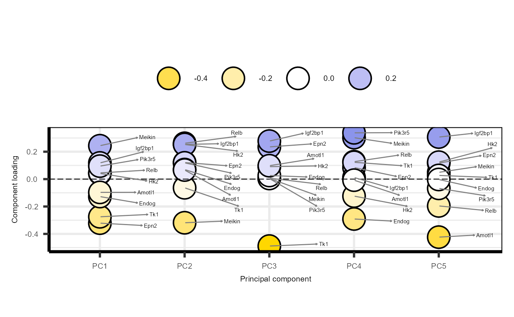

Plot principal component analysis (PCA), using features without missing values
The samples are coloured by Group and sized by Time. Ellipses are drawn for each Group.
Usage
plot_pca(
se_obj,
plot = TRUE,
plot_screeplot = TRUE,
plot_loadings = TRUE,
plot_morepc = TRUE,
morepc = seq(1, 5),
pc1 = 1,
pc2 = 2,
circle = FALSE,
xlim_min = NULL,
xlim_max = NULL,
ylim_min = NULL,
ylim_max = NULL,
fontsize = 8,
assay = 1,
...
)Arguments
- se_obj
A SummarizedExperiment object created by
create_input()- plot
Logical, whether to plot PCA and other plots (default is TRUE)
- plot_screeplot
Logical, whether to plot screeplot with
PCAtools::screeplot()(default is TRUE)- plot_loadings
Logical, whether to plot loadings with
PCAtools::plotloadings()(default is TRUE)- plot_morepc
Logical, whether to plot pairs of more PCs with
PCAtools::pairsplot()(default is TRUE)- morepc
A numeric vector of PCs to plot in the pairs plot (default is 1:5)
- pc1
Numeric, which PC to use for the x-axis (default is 1)
- pc2
Numeric, which PC to use for the y-axis (default is 2)
- circle
Logical, whether to draw circles (ellipses) around samples of each group (default is FALSE)
- xlim_min
Minimum x-axis limit when drawing ellipses (default 1.5*min PC1)
- xlim_max
Maximum x-axis limit when drawing ellipses (default 1.5*max PC1)
- ylim_min
Minimum y-axis limit when drawing ellipses (default 1.5*min PC2)
- ylim_max
Maximum y-axis limit when drawing ellipses (default 1.5*max PC2)
- fontsize
Font size for the PCA plot (default is 8)
- assay
Assay index to use, where 1 is the original data and 2 is normalised to time 0 (if available) (default is 1)
- ...
Additional arguments passed to
ggforce::geom_mark_ellipse()for customizing the ellipses
Value
A PCA plot showing the distribution of samples, other plots provided by PCAtools package, and PCAtools output object for custom plotting.
Examples
data("example")
PC = plot_pca(example_obj, morepc = seq(1, 3))
#> Warning: Using `size` aesthetic for lines was deprecated in ggplot2 3.4.0.
#> ℹ Please use `linewidth` instead.
#> ℹ The deprecated feature was likely used in the PCAtools package.
#> Please report the issue to the authors.
 #> -- variables retained:
#> Meikin, Epn2, Hk2, Relb, Igf2bp1, Tk1, Pik3r5, Endog, Amotl1
#> Warning: The `size` argument of `element_line()` is deprecated as of ggplot2 3.4.0.
#> ℹ Please use the `linewidth` argument instead.
#> ℹ The deprecated feature was likely used in the PCAtools package.
#> Please report the issue to the authors.
#> -- variables retained:
#> Meikin, Epn2, Hk2, Relb, Igf2bp1, Tk1, Pik3r5, Endog, Amotl1
#> Warning: The `size` argument of `element_line()` is deprecated as of ggplot2 3.4.0.
#> ℹ Please use the `linewidth` argument instead.
#> ℹ The deprecated feature was likely used in the PCAtools package.
#> Please report the issue to the authors.

#> Warning: Using size for a discrete variable is not advised.
 #> Scale for colour is already present.
#> Adding another scale for colour, which will replace the existing scale.
#> Scale for colour is already present.
#> Adding another scale for colour, which will replace the existing scale.
#> Scale for colour is already present.
#> Adding another scale for colour, which will replace the existing scale.
#> Scale for colour is already present.
#> Adding another scale for colour, which will replace the existing scale.
#> Scale for colour is already present.
#> Adding another scale for colour, which will replace the existing scale.
#> Scale for colour is already present.
#> Adding another scale for colour, which will replace the existing scale.